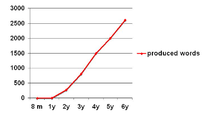
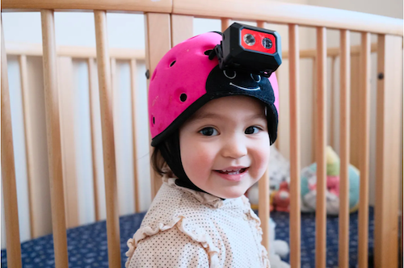

The difference between artificial intelligence (AI) and human intelligence is well known: whereas humans use their brain, their memory, and other cognitive abilities, AI uses data provided by humans. In fact, AI uses a lot of data. For example, large language models (LLMs), a type of generative AI, are trained on huge amounts of data. The Common Crawl archive, which is LLMs' primary source of data, contains around 3 billion web pages and 400 TB of unocmpressed data. Clearly, this is a lot of data needed to produce language. But more importantly, this is totally different from how humans learn language.
Humans start learning their first language as babies, thanks to, among other things, the input they receive from their parents or caregivers. Although the process of language acquisition starts very early (there are studies showing that babies start learning language while still in their mother's womb!), it is not until they are about a year old that they start producing their first words.
By when they are two, it is estimated that babies know roughly 300 words and continue learning words at a very rapid pace. Most of these words are nouns that refer to objects or people they often interact with (grammar develops later on in life). A critical component of this initial learning involves linking words to referents. For instance, linking the word "dog" to an actual dog.

Recently, a group of researchers tried training a language model the way babies learn language to see whether the results would be comparable.
In order to determine whether a language model could learn language in a human-like way, researchers had a baby wear a helmet-mounted camera that would capture image and sound. The baby wore this camera twice a week, from the age of 6 months to the age of 25 months. In the end, researchers ended up with roughly 61 hours of video and a corpus of 37,500 transcribed utterances.

With the data they had collected, researchers then trained a multimodal neural network model in a self-supervised manner (i.e., using no external data or labels). The goal was to train the model such that it could map words to referents using the images from the video recording and the words from the corpus of utterances.
Once the model was trained, it was time to test its accuracy. To do this, the model was presented with sets of 4 images extracted from the video recording and accompanied by a word. The idea was to see whether the model could select the right image (i.e., referent) for each word. This is a common experimental technique used in studies with children. Surprisingly, the model reached an accuracy of 61.6%, which was significantly above chance. Likewise, researchers examined whether the model could generalize and apply its knowledge to novel images not extracted from the video recording, and here the model also showed some success.
Despite results being exciting, we are still far from getting language models learn in a human-like way. After all, language is more than just words, and the study did not investigate whether these same learning mechanisms would apply to other language aspects, such as grammar, pronunciation, or even pragmatics. At the same time, the fact that a language model could behave in a human-like way to some extent does not mean that humans and language models learn language following the same processes. Human language learning is likely to involve other cognitive mechanisms beyond mere pattern recognition.
Researchers plan to continue studying some of these open questions. They have already transcribed more utterances from the camera footage and want to examine how the language model behaves now that it has more training data. Furthermore, researchers want to start "feeding" the model more complex data to see whether the language model develops other linguistic behaviors besides word-referent mappings.